pstack과 기획 단계
pstack은 Lauren Tan이 평소 쓰는 워크플로, 스킬, 원칙을 한 저장소에 모아 공개한 거예요. 화자는 링크드인과 React 팀 페이지를 보여 주며 그를 Cursor 엔지니어이자 React 코어 팀 멤버로 소개해요. 이 영상은 pstack의 스킬을 하나씩 짚고, 화자가 이전에 리뷰한 다른 스킬 모음과 무엇이 다른지 비교해요.
아래 화면은 화자가 자기 사이트 super-board에 직접 그린 pstack 지도예요. 맨 위에 pstack의 한 줄 소개 'if you want to go fast, go deep first'가 있고, 그 아래로 Plan, Design, Build, Test 단계가 칸으로 나뉘어 있어요. 칸마다 'START' 표시가 붙은 상자부터 화살표를 따라가면 그 워크플로의 스킬 순서가 돼요.
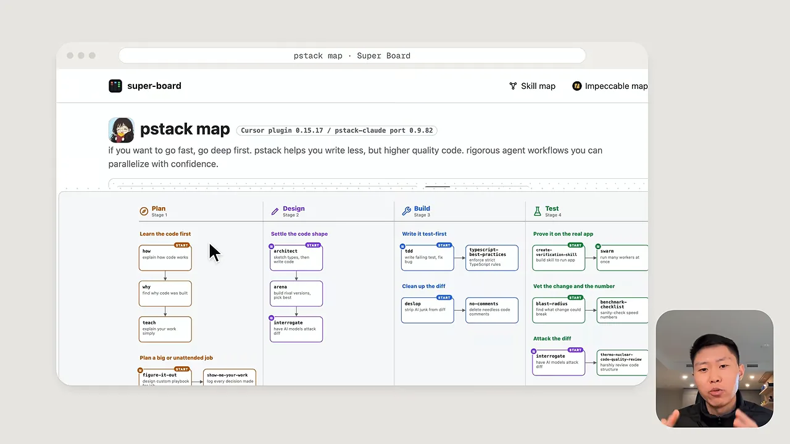
화자는 pstack을 세 덩어리로 나눠 봐요. 단계마다 스킬을 엮은 workflows, 개별 기능인 skills, 코드를 쓸 때 따르는 principles예요. 영상도 이 순서로 단계별 워크플로를 먼저 보고, 끝에 원칙을 다뤄요.
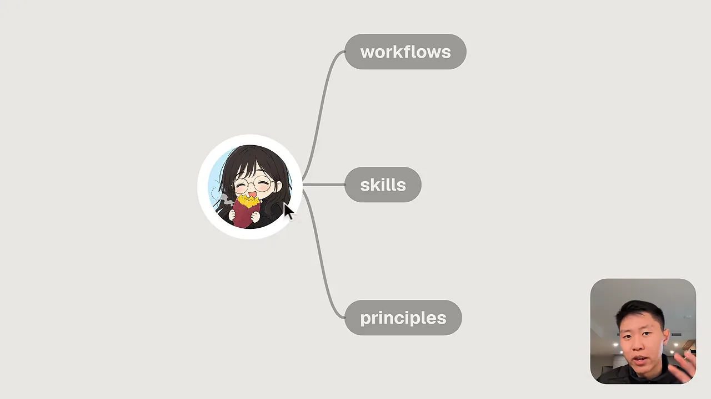
지도 전체를 표 하나로 옮기면 이래요. 화면은 단계마다 나눠 보여 주지만, 한눈에 보면 스킬이 테스트와 배포 쪽에 몰려 있고 유지보수 칸이 비어 있다는 게 드러나요.
| 단계 | 워크플로 | 스킬 (순서대로) |
|---|---|---|
| 1 기획 | 코드부터 배우기 | how → why → teach |
| 큰 작업 계획하기 | figure-it-out → show-me-your-work | |
| 2 설계 | 코드 모양 정하기 | architect → arena → interrogate |
| 3 구현 | 테스트 먼저 쓰기 | tdd → typescript-best-practices |
| diff 정리하기 | deslop → no-comments | |
| 4 테스트 | 실제 앱에서 증명하기 | create-verification-skill → swarm |
| 변경과 숫자 검증하기 | blast-radius → benchmark-checklist | |
| diff 공격하기 | interrogate → thermo-nuclear-code-quality-review | |
| 5 배포 | PR 머지하기 | make-pr-easy-to-review → babysit → fix-merge-conflicts → get-pr-comments → fix-ci |
| 6 유지보수 | 없음 | 지도에 이 단계 스킬이 없어요 |
기획: 이미 있는 코드를 이해하는 데 맞춰져 있어요
기획 칸에는 워크플로가 두 개 있어요. 위쪽 'Learn the code first'는 how(코드가 어떻게 돌아가는지), why(왜 이렇게 만들었는지), teach(둘을 엮어 쉽게 설명)로 이어져요. 아래쪽 'Plan a big or unattended job'은 figure-it-out에서 show-me-your-work로 가요. 화자는 이 구성이 브라운필드 프로젝트용이라고 짚어요.
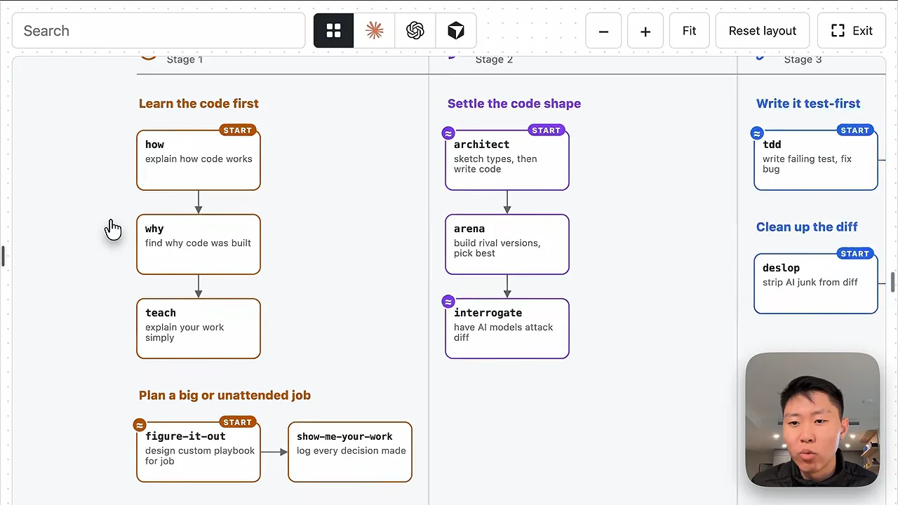
화면 예시로 보면 차이가 분명해요. /teach 카드의 위쪽 how 줄은 checkout() → charge() → db.orders라는 호출 순서를 보여 주고, 아래쪽 why 줄은 그 순서의 이유 'charge first, no orphans'를 적어요. 먼저 결제하고 나서 주문을 저장해야 결제 없는 주문이 남지 않는다는 뜻이에요.
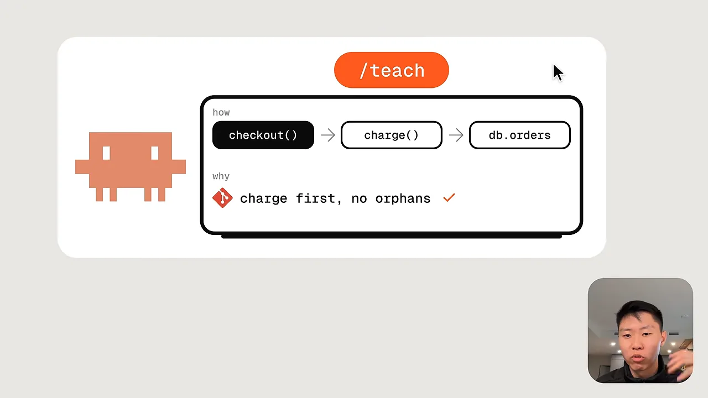
큰 작업은 figure-it-out이 왼쪽처럼 번호 붙은 작은 티켓 여섯 개('Cart model', 'Payment API', 'Checkout UI', 'Test the flow', 'Receipt email', 'Update docs')로 쪼개요. 오른쪽 검은 창 decisions.md는 show-me-your-work가 그 과정의 결정을 적어 둘 파일이에요.
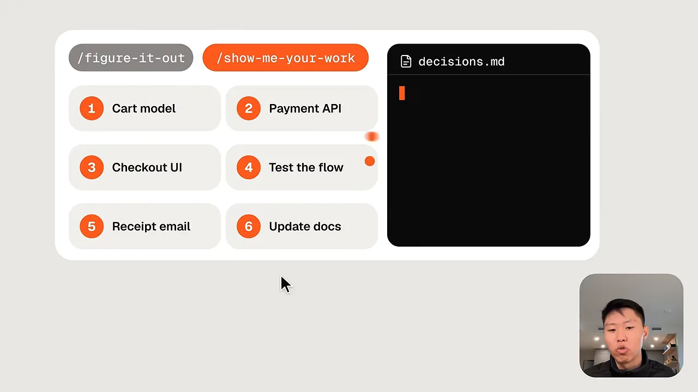
화자는 이 기획 스킬을 쓰지 않겠다고 해요. Lauren Tan은 기획 단계에 크게 힘을 주지 않고, 대규모 마이그레이션처럼 기존 앱을 크게 바꾸는 일에 맞춰져 있다는 거예요. 혼자 처음부터 앱을 만드는 사람이라면 Matt Pocock 스킬이나 Superpowers를 더 믿는다고 해요.
설계: 여러 모델에게 같은 설계를 시켜요
설계 단계는 코드를 한 줄도 쓰기 전에 구현의 모양을 정하는 곳이에요. 워크플로는 'Settle the code shape' 하나예요. 아래 화면처럼 먼저 타입과 인터페이스를 상자로 그려요. type Order가 interface PaymentGateway의 charge(order) → Receipt로 이어지고, 그 결과가 type Receipt가 돼요. 오른쪽 checkout.ts에는 그 모양대로 타입 선언이 채워져 있어요.
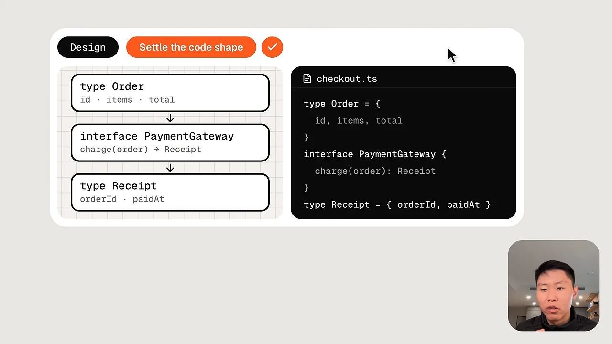
architect의 설명이 'sketch types, then write code'예요. 함수 몸통보다 타입이 먼저예요.
영상 02:22에서 보기
지도에서 보면 세 스킬이 세로로 이어져요. architect가 스케치하면 arena가 여러 모델과 에이전트에게 같은 설계를 동시에 맡겨 서로 다른 안을 받아요(build rival versions, pick best). 결과가 모이면 interrogate가 판정 역할의 모델을 세워 안들을 평가하고, 하나의 설계 보고서로 합쳐요.
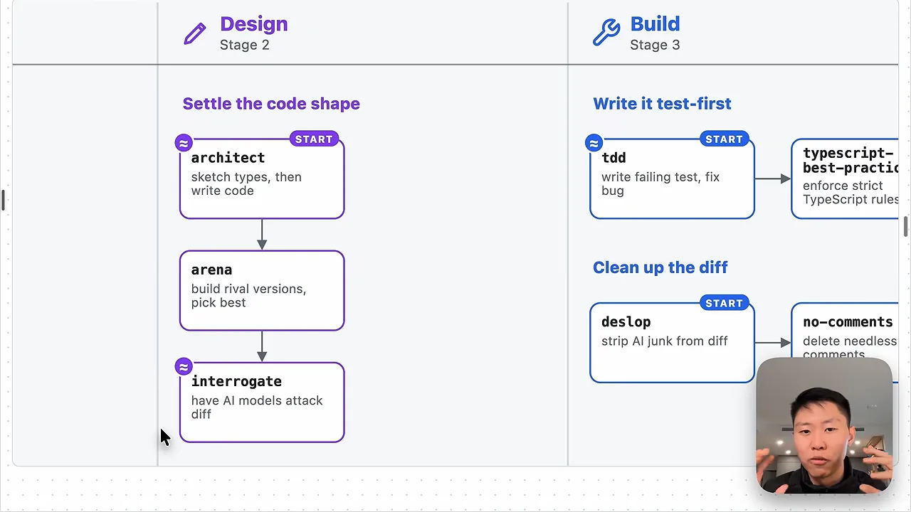
arena가 팬아웃으로 안을 여러 개 받고, interrogate가 그걸 하나로 모아요.
영상 02:46에서 보기
화자가 다른 스킬과 가장 다르다고 꼽은 게 이 부분이에요. 왼쪽 'my pick'은 모델 하나(one model)에서 답 하나(one answer)가 나오는 구조예요. 오른쪽 pstack은 Opus, GPT, Grok이 각자 결과를 내고, 점선을 따라 report 칸으로 모여요. report 칸에는 types, flow, tests처럼 모델마다 잘한 부분이 들어가요.
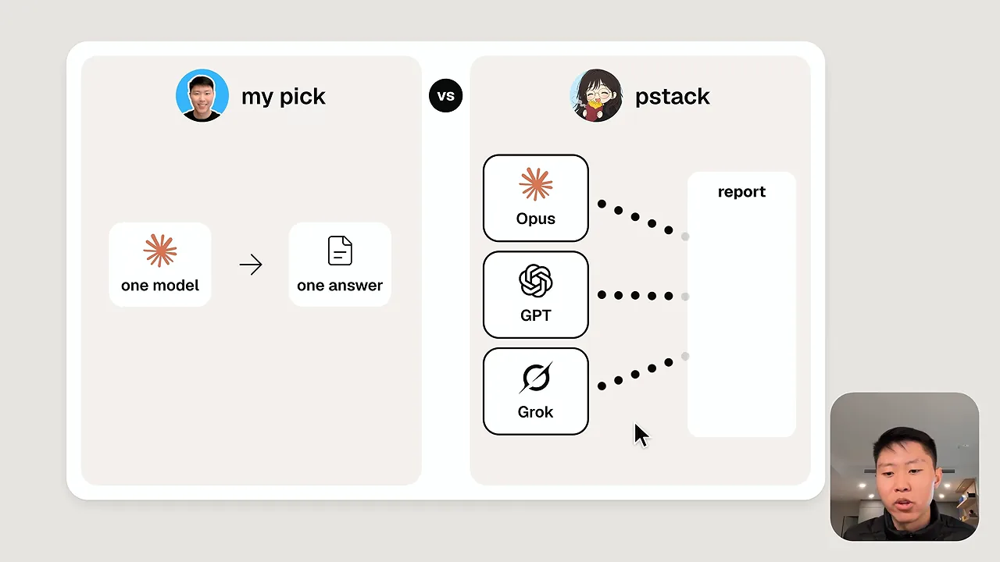
구현: 테스트 먼저, 그리고 군더더기 지우기
구현 단계에는 워크플로가 두 개예요. 'Write it test-first'는 tdd에서 typescript-best-practices로, 'Clean up the diff'는 deslop에서 no-comments로 이어져요.
세 가지 TDD 스킬 비교
TDD(Test-Driven Development) 스킬은 여러 곳에 있어서, 화자는 pstack·Matt Pocock·Superpowers의 TDD 스킬을 한 표로 비교해 뒀어요. 위쪽 탭(Overall, Quick bug fix, New feature solo, Strict team discipline …)을 누르면 상황별로 어느 스킬이 Best인지 바뀌어요. 아래 화면은 'Strict team discipline' 탭이라 Superpowers 열에 Best가 붙어 있어요.
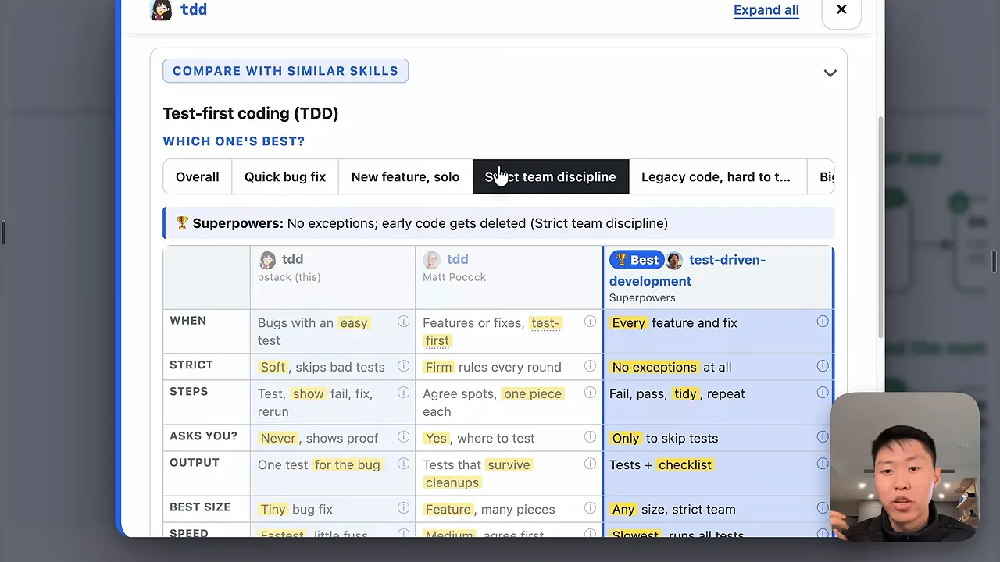
표의 내용을 우리말로 옮기면 이래요. pstack의 tdd는 가장 가볍고, Superpowers는 가장 엄격해요.
| 항목 | pstack tdd | Matt Pocock tdd | Superpowers test-driven-development |
|---|---|---|---|
| 언제 | 쉬운 테스트가 있는 버그 | 기능이나 수정, 테스트 먼저 | 모든 기능과 수정 |
| 엄격함 | 느슨함, 나쁜 테스트는 건너뜀 | 매 라운드 규칙을 지킴 | 예외 없음 |
| 단계 | 테스트 → 실패 확인 → 수정 → 재실행 | 테스트 지점 합의, 한 조각씩 | 실패 → 통과 → 정리 → 반복 |
| 사람에게 묻나 | 안 물음, 증거를 보여 줌 | 어디를 테스트할지 물음 | 테스트를 건너뛸 때만 |
| 결과물 | 버그 하나에 테스트 하나 | 정리 후에도 살아남는 테스트 | 테스트 + 체크리스트 |
| 맞는 크기 | 아주 작은 버그 수정 | 조각이 많은 기능 | 어떤 크기든, 엄격한 팀 |
| 속도 | 가장 빠름 | 중간, 먼저 합의 | 가장 느림, 테스트 전부 실행 |
| 특징 | 나쁜 테스트보다 테스트 없는 게 나음 | 테스트를 한꺼번에 먼저 쓰지 않음 | 코드를 먼저 썼다면 지움 |
TypeScript 규칙 강제하기
Lauren Tan은 React 쪽 사람이고 React 코드는 대부분 TypeScript라서, 화자는 typescript-best-practices가 따로 있다고 설명해요. 화면 예시는 let total: any, let user: any, let tags: any 세 줄이에요. any마다 빨간 X가 붙어요.
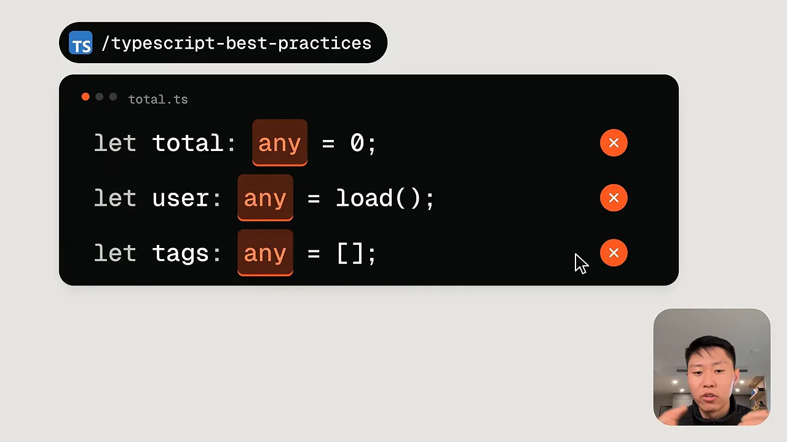
any로 뭉개면 타입 검사가 하는 일이 없어져요. 이 스킬은 AI가 그렇게 쓰지 못하게 막아요.
영상 04:16에서 보기
deslop: AI 슬롭 걷어내기
deslop은 먼저 main과 지금 브랜치(feat/checkout)의 diff를 봐요. 오른쪽 목록 'slop it hunts'가 찾는 대상이에요. extra comments, try / catch, error exceptions, any without types, deep nesting 다섯 가지예요. 왼쪽 diff에서는 throw new Error("checkout failed") 줄이 빨갛게 표시돼 있어요. 지금 error exceptions 항목에 걸린 줄이에요.
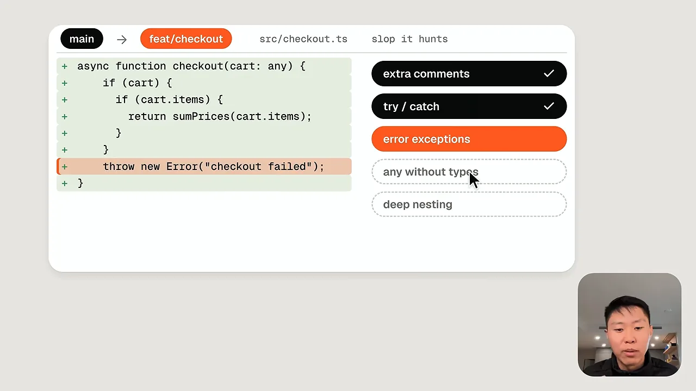
스킬 카드의 'HOW IT WORKS'는 네 단계예요. main과의 diff를 확인하고, 군더더기(주석, 이상한 try/catch, any 캐스트, 깊은 중첩)를 지우고, 동작은 그대로 두고, 한두 문장 요약을 줘요. 동작이 그대로인지는 테스트를 돌려 확인해요.
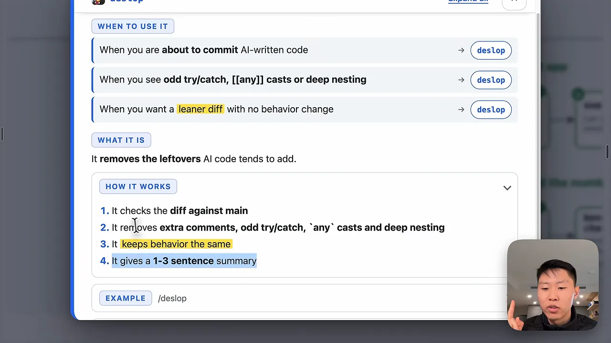
주석을 지우는 이유
pstack에는 no-comments라는 스킬이 따로 있어요. 화자는 그 이유를 아래 두 줄로 설명해요. 주석은 'returns A'라고 하는데 실제 코드는 return B;예요. 이럴 때 AI는 코드 대신 주석을 믿을 때가 있어요. 주석을 없애면 AI가 소음 없이 코드 자체를 읽게 돼요.
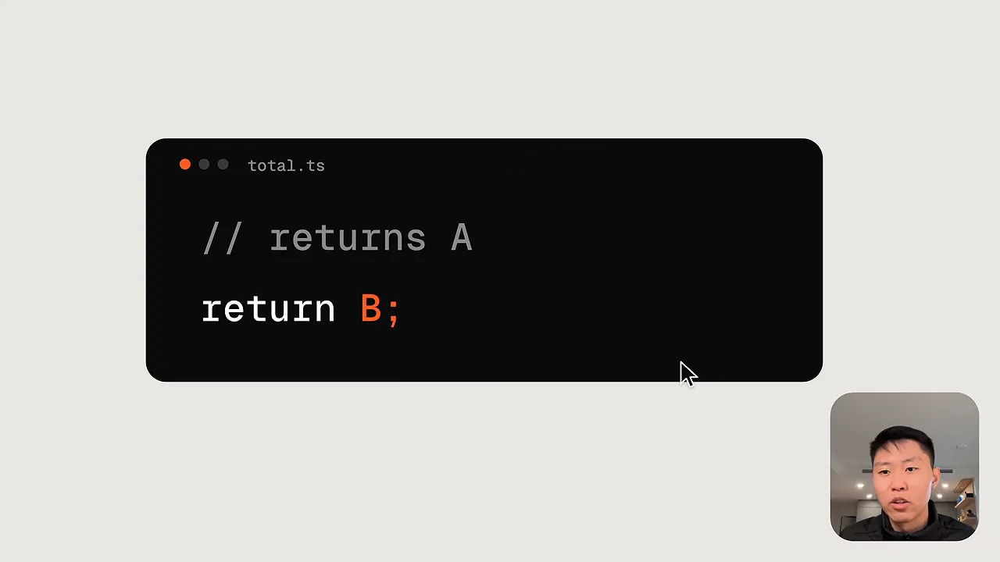
테스트: 실제 앱에서 증명하고, 일부러 깨 봐요
테스트 단계 칸에는 워크플로가 세 개 있어요. 'Prove it on the real app'(create-verification-skill → swarm), 'Vet the change and the number'(blast-radius → benchmark-checklist), 'Attack the diff'(interrogate → thermo-nuclear-code-quality-review)예요. 영상은 첫째와 셋째만 자세히 다루고, 가운데 워크플로는 지도에만 보여요.
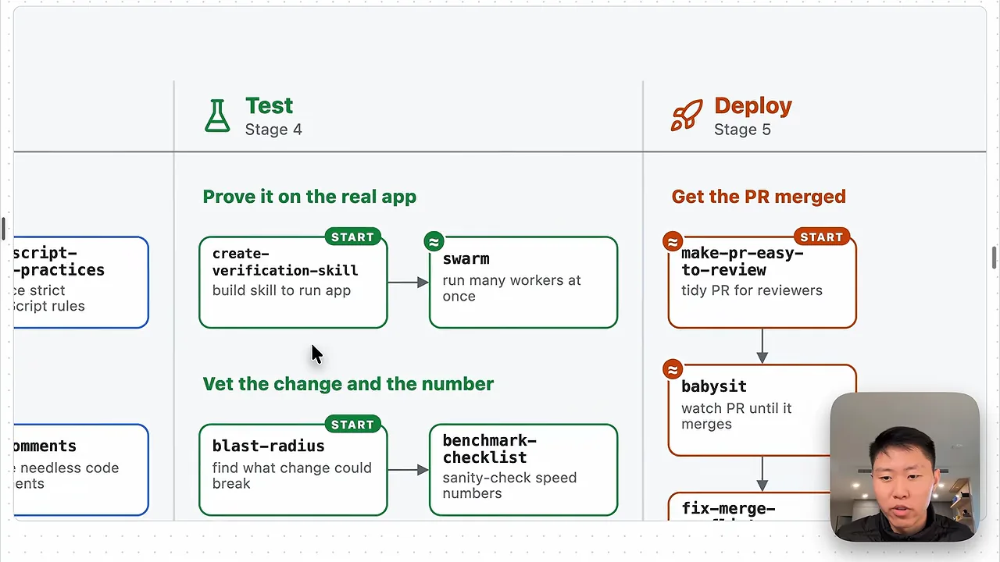
blast-radius는 '이 변경이 무엇을 깨뜨릴 수 있나', benchmark-checklist는 '속도 숫자가 맞나'를 봐요. 지도에 적힌 설명이에요.
영상 05:45에서 보기
실제 앱에서 증명하기
create-verification-skill은 TDD 스킬과 하는 일이 달라요. TDD가 기능·단위 테스트를 쓴다면, 이건 앱을 사용자처럼 실행해 보는 엔드투엔드 검증을 맡아요. 이름 그대로 테스트를 바로 쓰는 게 아니라 검증 스킬을 만들어 주는 스킬이에요. 엔드투엔드 테스트는 데이터베이스와 서버를 띄우고 사용자가 앱을 여는 방식까지 갖춰야 돌아가요. 그 절차를 매번 에이전트가 새로 알아내게 두지 않고, 스킬 파일로 남겨 두는 거예요.
카드의 'HOW IT WORKS' 다섯 단계를 보면 흐름이 보여요. 사람에게 묻는 대신 저장소를 읽어 실행 방법을 파악하고, verify-<app>/SKILL.md를 써요. 노란 표시가 그 파일에 들어가는 절이에요. Launch(실행), Doctor(문제 진단), Drive(사용자 동작 재현), Evidence(증거 수집), Cleanup(임시 DB(Database)·서버 정리), Helpers(보조 함수)예요. 이어서 기능마다 파일 하나씩 features/ 폴더를 만들고, 자기 단계를 한 번 끝까지 돌려 본 뒤, 유지보수 스킬을 알려 줘요.
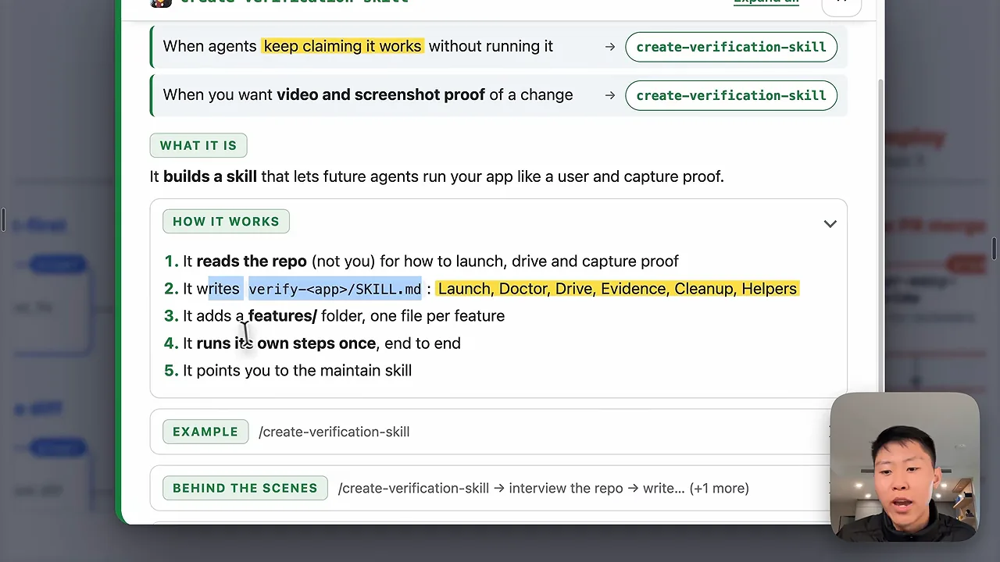
다음 swarm은 이 검증을 에이전트 하나가 처음부터 끝까지 하지 않게 해요. 첫 화면은 에이전트 하나가 열두 칸짜리 작업을 네 칸째 처리하고 있는 모습이에요. 혼자 하면 이렇게 하나씩 차례로 해야 해요.
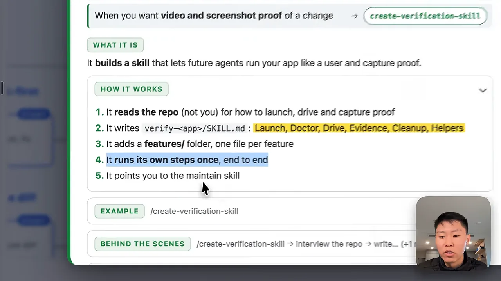
바로 뒤 화면에서는 모델이 다른 에이전트 세 개가 각자 맡은 부분을 끝내고(체크 표시) report.md 하나로 모여요. 아래 문구 'Fan out N parallel workers, drain them, and return one report'가 이 스킬의 정의예요.
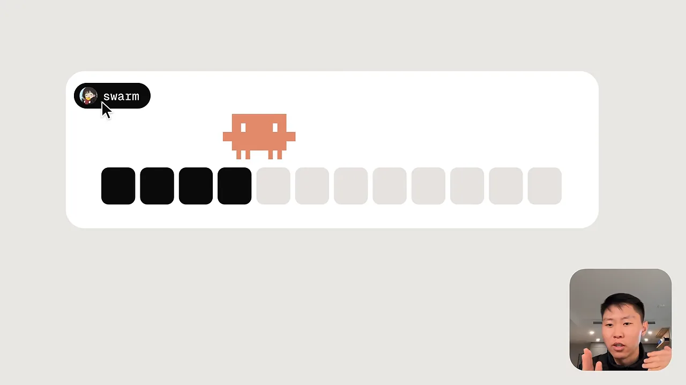
arena와 모양이 같아요. 이번에는 같은 일을 여러 번 하는 게 아니라 일을 나눠 맡겨요.
영상 07:09에서 보기
diff를 일부러 깨 보기
'Attack the diff'는 설계 단계의 interrogate를 다시 써요. 이번에는 main과 기능 브랜치의 diff를 보고, 여러 모델이 그 변경을 깨뜨릴 방법을 찾아요. 이어지는 thermo-nuclear-code-quality-review는 한 겹 더 혹독한 리뷰예요. 화면 설명은 '큰 단순화를 밀어붙이는 구조 리뷰'예요. 파일이 1000줄을 넘게 커질 때, 조건문이 스파게티처럼 쌓일 때 쓰라고 적혀 있어요.
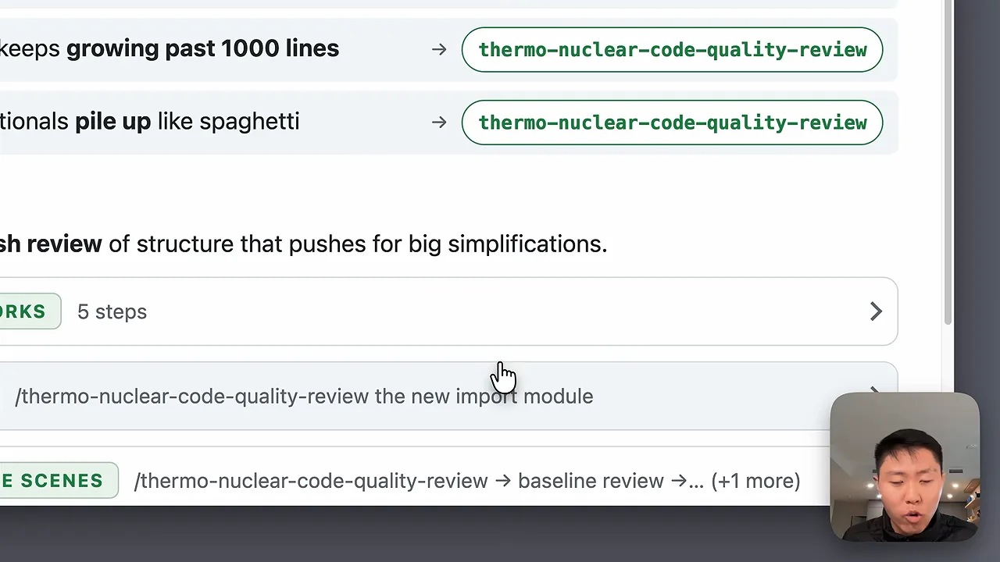
화자는 이 스킬이 전에 채널에서 리뷰한 ponytail 스킬과 비슷하다고 해요.
배포와 유지보수
배포 단계는 테스트를 마친 변경을 PR로 올려 머지까지 가져가는 곳이에요. 워크플로 'Get the PR merged'는 다섯 스킬이 위에서 아래로 이어져요. 맨 아래 기울임 글씨는 지도가 다루지 않는 범위를 적은 메모예요. 배포(rollout), 롤백, 출시 후 모니터링 스킬은 없고, babysit과 shipping은 머지에서 끝난다고 적혀 있어요.
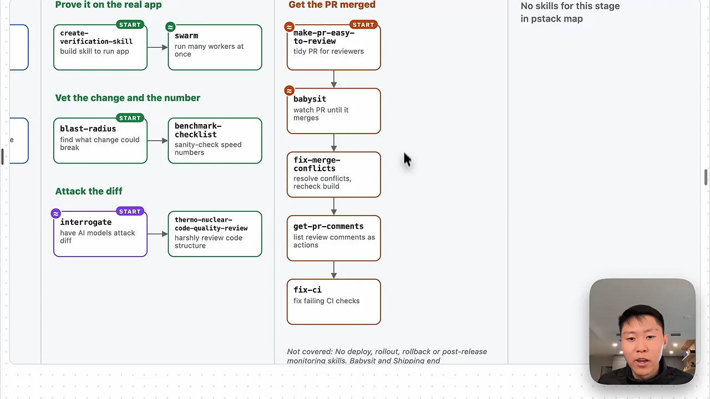
다섯 스킬이 하는 일을 순서대로 정리하면 이래요.
make-pr-easy-to-review— 리뷰하는 사람이 읽기 쉽게 PR을 다듬어요. 화자는 PR 작성 방식은 사람마다 달라서, 자기 super-board에도 따로 스타일이 있다고 해요. 참고용으로 보라는 뜻이에요.babysit— 머지될 때까지 PR을 지켜봐요.fix-merge-conflicts— 머지하려는 순간 동료가 먼저 머지해서 생긴 충돌을 풀고 빌드를 다시 확인해요.get-pr-comments— 리뷰 댓글을 모아 할 일 목록으로 바꿔요.fix-ci— 실패한 CI(Continuous Integration) 검사를 고쳐요.
유지보수 칸은 비어 있어요
여섯 번째 단계는 문제를 모아 다시 기획으로 돌려보내는 곳이에요. pstack 쪽(오른쪽)은 'stage 6' 자리가 비어 있어요. 화자는 왼쪽처럼 자기 super-board의 /super-collect를 대안으로 들어요. Sentry, PostHog, GitHub에서 에러·이탈·이슈를 모아 Backlog로 넣는 구조예요.
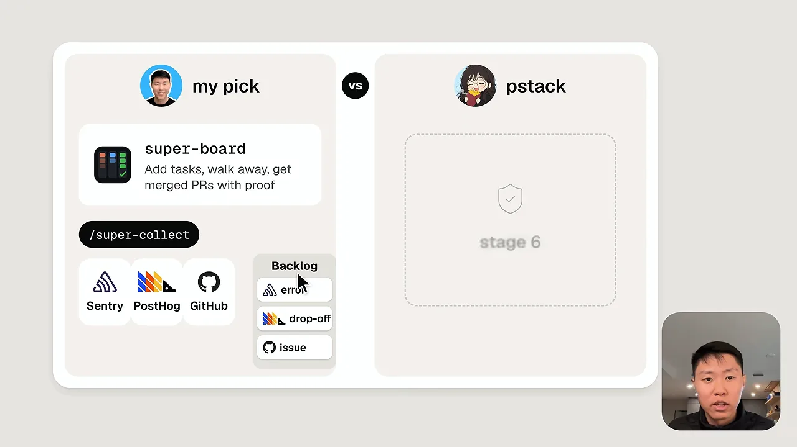
언제든 쓰는 스킬과 원칙
여섯 단계 밖에, 개발 중 언제든 꺼내 쓰는 스킬이 따로 있어요. 지도에서는 'Anytime' 줄이에요. 맨 앞 Router 칸의 poteto-mode는 'pick and run right playbook'이에요. 어떤 스킬을 써야 할지 모를 때 문제를 설명하면, 맞는 스킬을 골라 실행해 줘요. 그 옆 Setup and help 칸의 setup-pstack은 일마다 쓸 모델을 고르는 설정 스킬이에요.
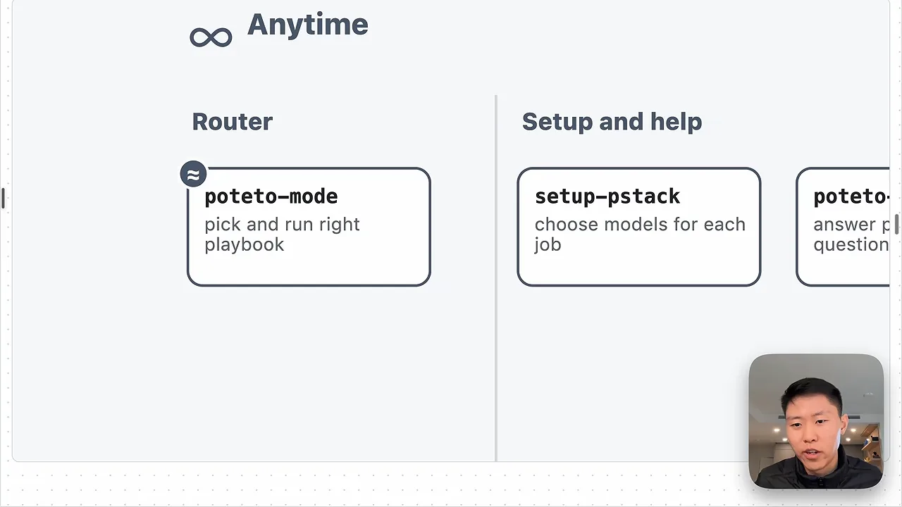
poteto-mode 하나만 기억해도 나머지 스킬로 길을 찾아가요.
영상 11:54에서 보기
나머지는 글쓰기, pstack 자체를 키우는 스킬이에요. Writing 칸에는 문서를 쓰는 technical-writing과 글에서 AI 말투를 걷어내는 unslop이 있어요. 'Improve pstack over time' 칸의 reflect는 작업에서 배운 걸 스킬로 남기고, correct는 반복되는 실수를 아예 못 하게 만들어요. automate-me는 내 작업 방식으로 나만의 모드 스킬을 만들어요. Extras 칸의 make-bot-ui는 Cursor 전용이에요.
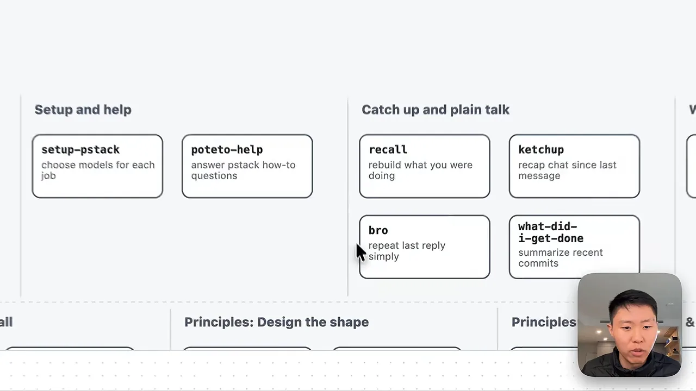
화자가 가장 마음에 들어 한 건 'Catch up and plain talk' 칸이에요. recall은 하던 일을 다시 짜 맞추고, ketchup은 마지막 메시지 이후 대화를 요약하고, bro는 방금 답을 쉽게 다시 말하고, what-did-i-get-done은 최근 커밋을 정리해요. 다른 프로젝트를 하다 돌아왔을 때 지금까지 무슨 일이 있었는지 떠올리기 좋다고 해요.
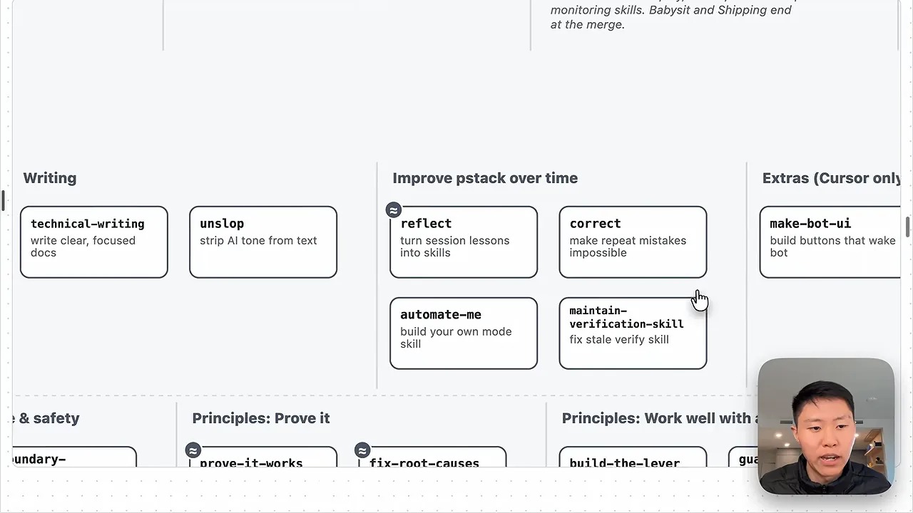
원칙은 왜 시스템 프롬프트가 아니라 스킬일까요
pstack에는 원칙이 아주 많아요. 화자는 이걸 시스템 프롬프트 하나에 몰아넣지 않은 이유를 설명해요. 아래 화면 왼쪽이 긴 system-prompt.md이고, 오른쪽 위 tokens 막대가 거의 다 찼어요. 메시지를 보낼 때마다 이 파일을 통째로 읽기 때문이에요. 지금 하는 일과 상관없는 규칙에도 토큰을 쓰게 돼요.
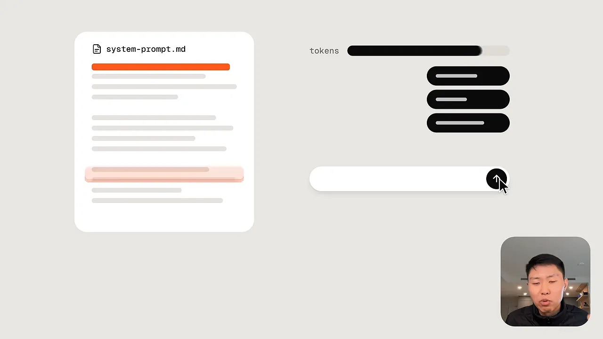
pstack은 원칙을 스킬 여러 개로 나누고, 언제 어떤 원칙을 꺼낼지 적은 색인만 둬요. 화면은 시스템 프롬프트 쪽만 보여 줘서, 화자가 말로 설명한 두 방식을 나란히 그렸어요.
attack-the-premise: 고치기를 멈추고 전제를 의심해요
원칙이 너무 많아서, 화자는 자기 super-board에 없는 것 중 쓸모 있는 두 가지만 골라요. 'Keep it small' 묶음은 이미 리뷰한 ponytail 스킬과 비슷해서 건너뛰어요. 'Design the shape' 묶음에서 고른 게 가운데 왼쪽 attack-the-premise예요. 상자 설명은 'question the shared assumption'이에요.
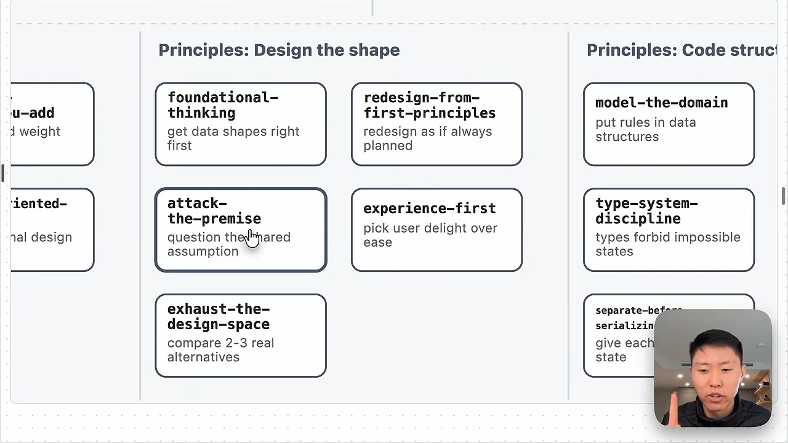
이 원칙이 막으려는 상황이 아래 그림이에요. AI가 버그를 고쳐도(fix) 여전히 고장(still broken)이고, 또 고쳐도 또 고장이에요. 화살표가 원을 그리며 돌아요. AI가 이 버그를 영영 못 고치는 것처럼 느껴지는 루프예요.
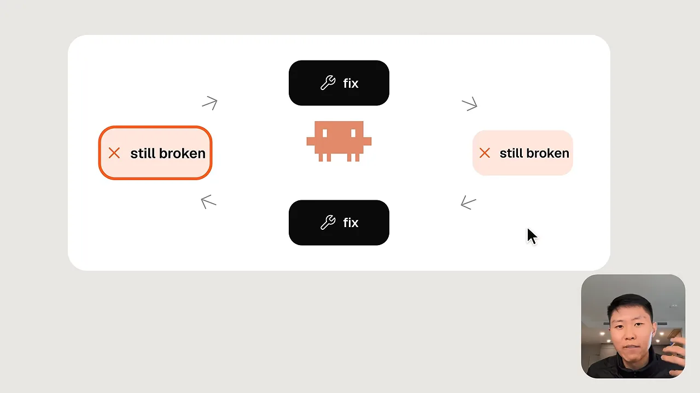
원칙은 이 고리를 끊어요. bug에서 바로 다음 수정(more fixes)으로 가지 않고, 'right track?'에서 멈춰 전제(the premise)를 의심해요. 아래 따옴표 문장 'suspect the premise, not the fixes'가 이 원칙의 요약이에요. 화자는 이 원칙을 자기 super-board에도 넣겠다고 해요.
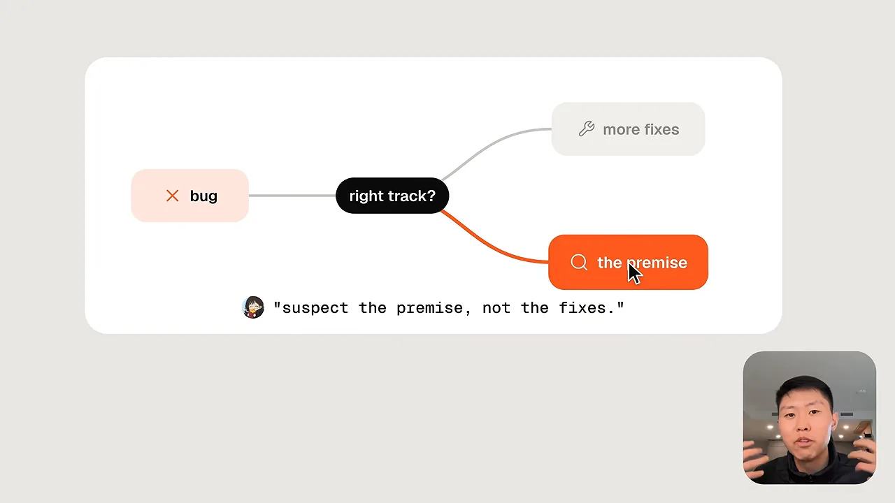
type-system-discipline: 불가능한 상태를 타입으로 막아요
두 번째로 고른 건 'Code structure & safety' 묶음의 type-system-discipline이에요. 카드의 'WHAT IT IS' 줄은 'Make the compiler reject impossible states'예요. 타입이 있는 언어에서 타입이나 함수 시그니처를 설계할 때 쓰라고 적혀 있고, 위쪽 태그를 보면 Claude Code, Cursor, Codex에서 모두 쓸 수 있어요.
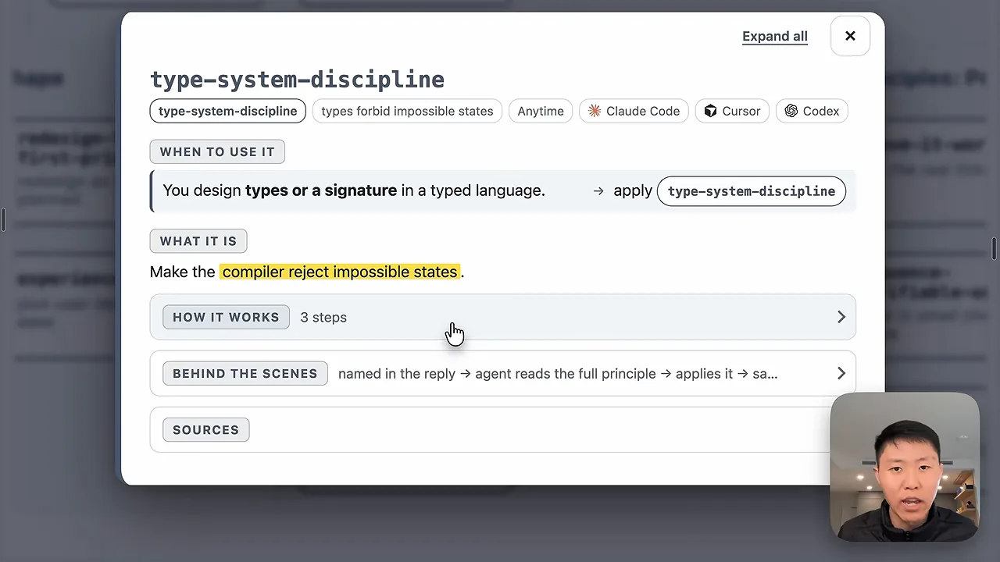
화자의 예시는 결제예요. 결제 하나가 '결제 완료'이면서 동시에 '대기 중'일 수는 없어요. 변수가 여러 상태를 가질 수 있을 때, 이런 불가능한 상태는 아예 만들어지지 않게 해야 한다는 거예요. 화자는 이 원칙도 자기 super-board에 넣겠다고 해요.